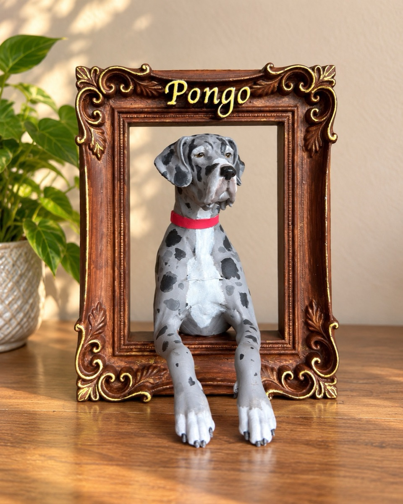
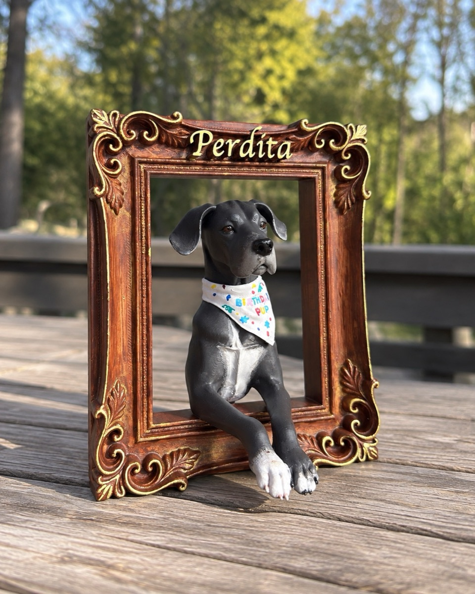
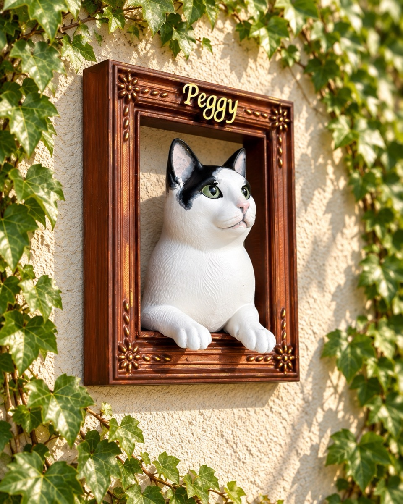

Storybook
Warm, bouncy and children’s-book friendly. Thick outlines, chunky drop shadows, speech-bubble bios and a logo that gently bobs. The closest in spirit to the old site, just much better made.

Atelier
The grown-up, boutique option. Espresso and cream, italic serif headlines, a film-grain overlay, and the portraits laid out like a catalogue of commissioned works. Sells the craft.

Scrapbook
A family photo album pinned to a corkboard. Tilted polaroids, washi tape, handwritten captions and grid paper. The most personal and the most fun; the least corporate.

Gallery
Museum treatment. Enormous whitespace, quiet type, almost no colour, and the photographs hung like artworks with little caption plates. Makes the frames feel expensive.

Bento
The modern app-like one. Soft pastel tiles of different sizes packed into a bento grid, diffused shadows and springy hovers. Cute, but current rather than cutesy.